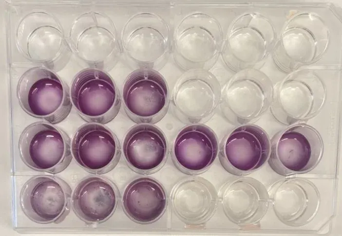

Biomaterial cytotoxicity thesis
Swipe sideways to see all four tests.
Tested whether a new boron-based material for bone implants harms living cells, and first had to figure out why the test said even a known-safe material was harmful. Accepted for presentation at the 2026 BMES Annual Meeting.
Problem and motivation
Bone implants still run into complications often, so researchers keep developing safer materials. This project checks whether a new boron-based material is safe for living cells, looking for a version that is as gentle on cells as possible while staying strong enough for an implant. The first hurdle was the test itself: every sample, even one that should have been completely safe, appeared to kill the MCF-7 cells (breast cancer cell line). That meant something in the test setup, not the materials, was likely to blame.
Approach
The material is a new boron-based biomaterial, made following published preparation methods. Samples were tested on MCF-7 cells with an MTT assay. Each test also included a drug known to harm these cells and a well with nothing added, so results could be compared against both extremes. We refined how samples were prepared over four rounds to remove the acidity problem.
Outcome and results
- Test 1 (samples sterilized with UV light for 12 hours): the liquid around the cells turned acidic as soon as the samples went in, and every sample appeared to kill the cells. That suggested acidity, not the materials themselves, was the real problem.
- Test 2 (added a soak in 70% alcohol, meant to draw the acid out): the liquid still turned acidic right away, and every sample still appeared harmful.
- Test 3 (+ PBS soak): the acidity now took about ten minutes to appear instead of happening instantly, a partial improvement, but every sample still appeared harmful.
- Test 4 (four changes at once: 1 hour of UV instead of 12, a quick rinse instead of a long soak, larger test wells, and a less acidic recipe): the known-safe material finally tested as safe, but every sample containing the new material still harmed the cells, even though earlier studies had described it as safe.
Skills practiced
- Running MTT cytotoxicity assays on MCF-7 cells with positive and negative controls
- Preparing material samples for testing on cells
- Tracking down a misleading test result using acidity readings and published research
- Writing a conference abstract
Challenges and what I'd do next
With the poster deadline days away, we changed four things at once in Test 4 instead of one at a time, so we can't yet tell which change fixed the problem. Next, we'll test each change on its own and find out why the new material still harms cells.
Tools
- MTT assay
- MCF-7 cells
- UV sterilization
- Ethanol and PBS soaks
- Multi-well test plates
- Excel